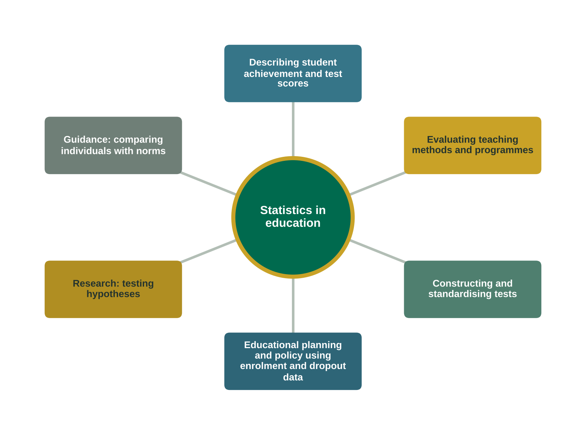
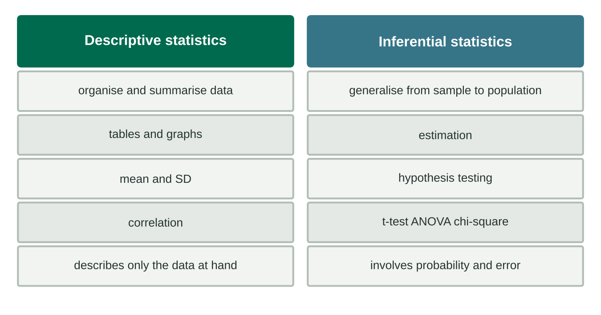
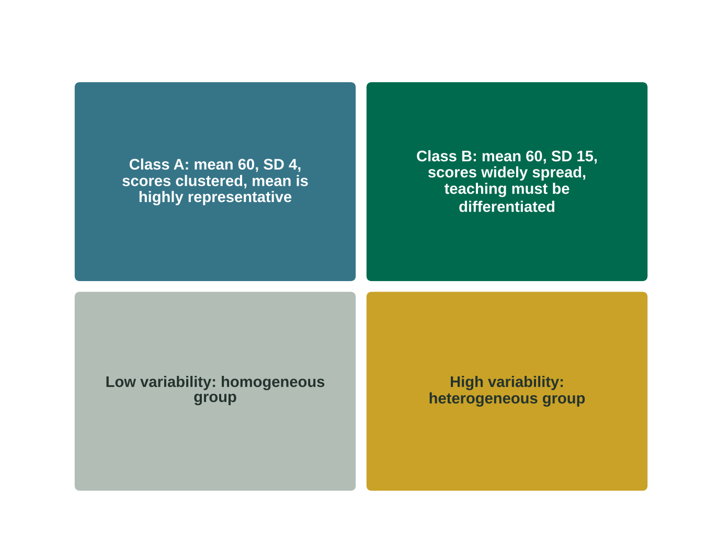
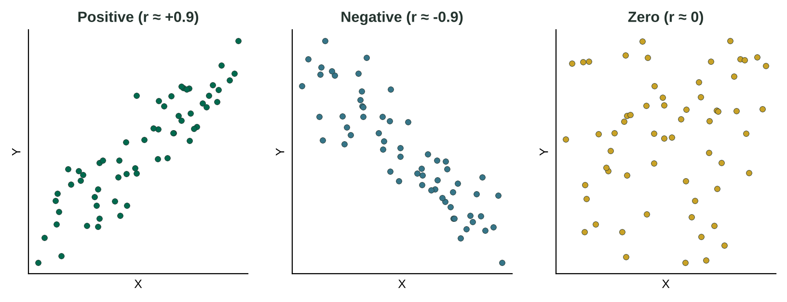
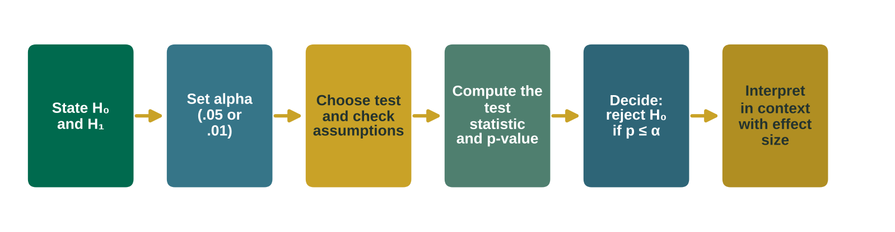

PC 126 Statistics in Education
Statistical literacy for educators: describing, displaying, relating and inferring from educational data with Excel and SPSS
Contents
About this course
Statistics is the science of collecting, organising, summarising, analysing and interpreting numerical data. For teachers, researchers and educational planners it is the language in which test results, enrolment trends, programme effects and research findings are expressed. This course builds statistical literacy and the competence to use quantitative methods: the basic concepts of variables, data and scales of measurement; organising and displaying data in tables and graphs; measures of central tendency and variability; correlation and regression; probability, the normal distribution and statistical inference; and the practical cycle of collecting, analysing and interpreting educational data with Microsoft Excel and IBM SPSS. Worked examples are given step by step so that the notes can be used directly for teaching.
Course objectives
Explain the meaning, role and branches of statistics and the scales of measurement.
Organise data into frequency distributions, tables and graphs, including boxplots.
Compute and interpret measures of central tendency and variability.
Compute and interpret Pearson and Spearman correlation and simple linear regression.
Explain probability, the normal distribution, estimation and hypothesis testing.
Carry out and interpret basic analyses in Excel and SPSS.
Each unit follows the official syllabus order. Read the narrative first, then the Key point boxes, then test yourself with the Exam focus questions.
Golden boxes = must-remember ideas. Teal boxes = definitions and study tips. Green boxes = Bangladesh context.
The final chapter is a question bank (MCQs with answers, short and broad questions) in the style of university examinations, followed by full references in APA 7th style.
Statistics on enrolment, budgets and policies change every year. Before an exam, check the latest BANBEIS, DPE, UGC and UNESCO figures.
Unit 1: Introduction to Statistics
Chapter summary
The word statistics is derived from the Latin status and the Italian statista (a person who deals with affairs of the state). Originally it meant data collected by governments about population and resources.
This chapter covers: Meaning of statistics; Role of statistics in education; Variables, attributes and constructs; Data and data structure; Scales of measurement (Stevens, 1946); Population and sample; parameter and statistic; Descriptive and inferential statistics; Statistical notation and basic mathematics.
Key terms:
- Statistics (Croxton & Cowden) : "Statistics may be defined as the collection, presentation, analysis and interpretation of numerical data."
- Statistics (Gravetter & Wallnau, 2017) : "The term statistics refers to a set of mathematical procedures for organizing, summarizing, and interpreting information."
Key points to remember:
- P arameter goes with P opulation; S tatistic goes with S ample.
What the curriculum saysUnit 1: Introduction to Statistics · 3 contact hours
At the end of this unit learners will be able to
- describe the basic concepts of statistics (such as, population, sample, parameter, statistic etc.)
- explain the concept of variables and data and their classifications
- establish the importance of statistical analysis
- The meaning and role of statistics in education
- Variables, attributes/constructs, types of variables; individual variables and relationship between
- Data: definition, classification data structure
- Scales of measurement: nominal, ordinal, interval and ratio scales
- Population and sample; parameter and statistic
- Major classification of statistics: Descriptive and inferential statistics
- Statistical notations and basic mathematics used in statistics
1.1 Meaning of statistics
The word statistics is derived from the Latin status and the Italian statista (a person who deals with affairs of the state). Originally it meant data collected by governments about population and resources. Today it has two meanings: (1) in the plural, numerical facts (e.g., enrolment statistics of BANBEIS); and (2) in the singular, the science of collecting, organising, analysing and interpreting data.
Statistics (Croxton & Cowden): "Statistics may be defined as the collection, presentation, analysis and interpretation of numerical data."
Statistics (Gravetter & Wallnau, 2017): "The term statistics refers to a set of mathematical procedures for organizing, summarizing, and interpreting information."
1.2 Role of statistics in education

Figure 1. Uses of statistics in education
Teachers use the mean, standard deviation and percentile ranks to interpret class performance, convert marks into grades and identify learners who need support.
Test developers use item analysis, reliability coefficients and norms (see PC 117).
Researchers use inferential statistics to test hypotheses and generalise from samples to populations.
Planners use enrolment, gender parity, dropout and survival rates (e.g., BANBEIS Annual Primary School Census and Bangladesh Education Statistics).
Limitations: statistics deals with aggregates, not individuals; results are true only on average; it can be misused or misinterpreted ("lies, damned lies and statistics"); it cannot study qualitative phenomena directly; laws are probabilistic, not exact.
1.3 Variables, attributes and constructs
A variable is a characteristic that can take different values for different individuals (e.g., age, test score, gender). A constant has the same value for everyone in the study. A construct is a hypothetical, abstract attribute (intelligence, motivation, anxiety) that must be operationally defined and measured indirectly.
| Classification | Types | Examples |
|---|---|---|
| By nature | Qualitative (categorical) vs quantitative (numerical) | Gender, religion vs marks, age |
| By values | Discrete (countable, whole numbers) vs continuous (any value in a range) | Number of siblings vs height, time |
| By role | Independent vs dependent (plus moderating, mediating, control) | Teaching method vs achievement |
| By number studied | Univariate (one), bivariate (two), multivariate (more) |
Studying an individual variable answers "what is the distribution?" (e.g., average achievement). Studying the relationship between variables answers "do they go together?" (correlation) or "do groups differ?" (comparison).
1.4 Data and data structure
Data (singular datum) are measurements or observations recorded for analysis. A data set is a collection of data; a score or raw score is a single measurement.
Primary data: collected first-hand by the researcher (questionnaire, test).
Secondary data: collected by others (BANBEIS, census, PISA data).
Cross-sectional vs time-series data.
Data structure: in a data matrix (Excel, SPSS), each row is a case (student) and each column is a variable.
| ID | Gender (1 = M, 2 = F) | School type (1 = Govt, 2 = Non-govt) | Math score | Study hours |
|---|---|---|---|---|
| 1 | 2 | 1 | 72 | 3 |
| 2 | 1 | 2 | 58 | 1 |
| 3 | 2 | 2 | 81 | 4 |
1.5 Scales of measurement (Stevens, 1946)
S. S. Stevens classified measurement into four levels. Each higher level has all the properties of the lower ones plus one more.
")
Figure 2. The four scales of measurement, from lowest to highest (Stevens, 1946)
| Scale | Properties | Permissible statistics | Example |
|---|---|---|---|
| Nominal | Identity (classification) | Frequency, percentage, mode, chi-square | Gender, division, school type |
| Ordinal | Identity + order | Median, percentiles, Spearman's rho, Mann–Whitney | Merit position, Likert item |
| Interval | Identity + order + equal intervals | Mean, SD, Pearson r, t-test, ANOVA | Celsius temperature, IQ |
| Ratio | All above + absolute (true) zero | All statistics, including ratios and coefficient of variation | Height, weight, reaction time |
Memory aid: NOIR (Nominal, Ordinal, Interval, Ratio). A score of 0 on an achievement test does not mean zero knowledge, so most test scores are treated as interval, not ratio.
1.6 Population and sample; parameter and statistic
| Term | Meaning | Symbol |
|---|---|---|
| Population | The entire group of interest | Size N |
| Sample | A subset of the population actually studied | Size n |
| Parameter | A numerical characteristic of a population | Greek letters: μ (mean), σ (SD), ρ (correlation) |
| Statistic | A numerical characteristic of a sample | Roman letters: x̄ or M (mean), s (SD), r (correlation) |
Parameter goes with Population; Statistic goes with Sample. Inferential statistics uses sample statistics to estimate population parameters.
1.7 Descriptive and inferential statistics

Figure 3. The two major branches of statistics
1.8 Statistical notation and basic mathematics
| Symbol | Meaning |
|---|---|
| X, Y | Raw scores on variables X and Y |
| N, n | Number of scores in population, sample |
| Σ (sigma) | "Sum of"; ΣX = X₁ + X₂ + … + Xₙ |
| ΣX² | Sum of squared scores (square first, then add) |
| (ΣX)² | Square of the sum (add first, then square) |
| f | Frequency |
| x̄, μ | Sample mean, population mean |
| s, σ | Sample SD, population SD |
| s², σ² | Variance |
| r, ρ | Correlation coefficient |
| z | Standard score |
| H₀, H₁ | Null and alternative hypotheses |
| α | Level of significance |
Order of operations: brackets → squares and roots → multiplication and division → summation → addition and subtraction. Rounding: carry at least two more decimal places than the final answer requires.
Likely questions: "Define statistics and explain its importance in education." "Explain the scales of measurement with examples." "Distinguish between parameter and statistic; descriptive and inferential statistics."
Unit 2: Organising and Displaying Data
Chapter summary
Raw (ungrouped) data are scores as originally collected, in no particular order. They are difficult to interpret.
This chapter covers: Raw data and organised data; Coding categorical variables; Tabulation; Frequency distribution; Univariate, bivariate and multivariate distributions; Displaying distributions with graphs; The five-number summary and boxplots; Lab exercises: Excel and SPSS.
What the curriculum saysUnit 2: Organizing and Displaying Data · 7 contact hours
At the end of this unit learners will be able to
- describe the importance and ways of data organization
- define and construct frequency distribution
- presenting results through tables and graphs
- explain data presented through tables and graphs
- Raw data and organized data
- Coding data from categorical variables
- Tabulation of data, essential components of tables, construction of tables
- Simple frequency distribution: Purpose, types and properties of frequency distribution;
- Distribution of data: Univariate, Bivariate and Multivariate
- Displaying distributions with graphs: importance, characteristics of graphs
- Simple frequency distribution graphs: graphing, classification and shapes
- The five number summary or boxplots Lab Exercise 1: Introducing Microsoft Excel to use in statistical analysis Lab Exercise 2: Introducing SPSS to use in statistical analysis Lab Exercise 3: Data entry in Excel and SPSS Lab Exercise 4: Frequency distribution, tabular and graphical representation using Excel and SPSS
2.1 Raw data and organised data
Raw (ungrouped) data are scores as originally collected, in no particular order. They are difficult to interpret. Organised data are arranged in an array (ascending or descending order), a frequency distribution, a table or a graph.
2.2 Coding categorical variables
Categorical responses are converted to numbers for analysis: Gender (1 = Male, 2 = Female); Location (1 = Urban, 2 = Rural); Likert (5 = Strongly agree … 1 = Strongly disagree). A codebook documents every variable name, label, code values and missing-value codes (e.g., 99 = no response). Numbers on nominal variables are labels only: the mean of a gender code is meaningless.
2.3 Tabulation
Tabulation is the systematic arrangement of data in rows and columns.
Essential components of a table: (1) table number; (2) title (what, where, when); (3) caption or column headings; (4) stub or row headings; (5) body; (6) head note (units); (7) footnote and source note.
| Type | Description |
|---|---|
| Simple (one-way) table | Data classified on one characteristic (e.g., students by grade) |
| Two-way (cross) table | Two characteristics (e.g., gender × result) |
| Complex (manifold) table | Three or more characteristics |
Example of a two-way table: Results of Grade 8 students by gender (hypothetical)
| Gender | Pass | Fail | Total |
|---|---|---|---|
| Boys | 42 | 8 | 50 |
| Girls | 45 | 5 | 50 |
| Total | 87 | 13 | 100 |
2.4 Frequency distribution
A frequency distribution is a table showing how often each score or group of scores occurs.
Simple (ungrouped) frequency distribution: lists each score with its frequency; used when the range is small.
Grouped frequency distribution: scores are grouped into class intervals; used when the range is large.
Relative frequency (proportion = f/N), percentage frequency, cumulative frequency (cf) and cumulative percentage.
Steps in constructing a grouped frequency distribution (Garrett, 1973)
Find the range = highest score − lowest score.
Decide the number of class intervals (usually 5–15; Sturges' rule k ≈ 1 + 3.322 log N).
Determine the class width (i) = range ÷ number of classes, rounded to a convenient number (2, 3, 5, 10).
Start the lowest class at a multiple of i at or below the lowest score.
Tally each score into its class; count frequencies; check that Σf = N.
Key terms: stated (apparent) limits such as 60–69; exact (real) limits 59.5–69.5; midpoint = (lower limit + upper limit)/2 = 64.5.
Worked example: marks of 40 students
| Class interval | Exact limits | Midpoint (x) | f | cf | % |
|---|---|---|---|---|---|
| 30–39 | 29.5–39.5 | 34.5 | 3 | 3 | 7.5 |
| 40–49 | 39.5–49.5 | 44.5 | 5 | 8 | 12.5 |
| 50–59 | 49.5–59.5 | 54.5 | 9 | 17 | 22.5 |
| 60–69 | 59.5–69.5 | 64.5 | 12 | 29 | 30.0 |
| 70–79 | 69.5–79.5 | 74.5 | 7 | 36 | 17.5 |
| 80–89 | 79.5–89.5 | 84.5 | 4 | 40 | 10.0 |
| Total | N = 40 | 100 |
This table is used again in Unit 3 to compute the mean, median, mode and standard deviation.
2.5 Univariate, bivariate and multivariate distributions
Univariate: the distribution of a single variable (marks in mathematics).
Bivariate: the joint distribution of two variables (marks in mathematics and in science), displayed in a cross-table or scatterplot.
Multivariate: three or more variables considered together (achievement by gender, location and SES).
2.6 Displaying distributions with graphs
Graphs make patterns visible at a glance, aid comparison and are remembered more easily. A good graph has a clear title, labelled axes with units, an appropriate scale (Y-axis usually starting at zero for bar graphs; height about two-thirds to three-quarters of width), a legend where needed, and no unnecessary decoration ("chartjunk", Tufte, 1983).
| Graph | Data | Description |
|---|---|---|
| Bar graph | Nominal or ordinal | Separate bars for categories; gaps between bars |
| Pie chart | Nominal (parts of a whole) | Sectors proportional to percentages (angle = % × 3.6°) |
| Histogram | Interval or ratio (grouped) | Adjacent bars on exact limits; area represents frequency |
| Frequency polygon | Interval or ratio | Points at class midpoints joined by straight lines, closed at both ends |
| Ogive (cumulative frequency curve) | Interval or ratio | Cumulative frequencies plotted at upper exact limits; used to read median and percentiles |
| Stem-and-leaf display (Tukey) | Small data sets | Retains actual values |
| Line graph | Time series | Trends over time (e.g., enrolment 2010–2024) |
| Boxplot | Interval or ratio | Five-number summary; shows outliers |
| Scatterplot | Two interval variables | Relationship (Unit 4) |
")
Figure 4. A histogram with its frequency polygon (illustrative test scores)
Shapes of distributions
Symmetrical: the two halves mirror each other (normal, bell-shaped).
Positively skewed: tail to the right; most scores are low (a very difficult test).
Negatively skewed: tail to the left; most scores are high (a very easy test).
Kurtosis: peakedness: leptokurtic (tall, thin), mesokurtic (normal), platykurtic (flat).
Modality: unimodal, bimodal (two peaks, perhaps two different groups), multimodal; rectangular (uniform).

Figure 5. Symmetrical and skewed distributions and the positions of mean, median and mode

Figure 6. Kurtosis: leptokurtic, mesokurtic and platykurtic distributions
2.7 The five-number summary and boxplots
John Tukey (1977) proposed the five-number summary: minimum, first quartile (Q1), median (Q2), third quartile (Q3) and maximum. The boxplot (box-and-whisker plot) displays it.
The box runs from Q1 to Q3 and contains the middle 50% of scores; its length is the interquartile range (IQR = Q3 − Q1).
The line inside the box is the median.
Whiskers extend to the most extreme scores within 1.5 × IQR of the box.
Points beyond 1.5 × IQR are plotted as outliers.
Example: For the scores 11, 12, 13, 14, 15, 15, 16, 17, 18, 19: minimum = 11, Q1 = 13, median = 15, Q3 = 17, maximum = 19; IQR = 4. (Quartiles here are the medians of the lower and upper halves; software may use slightly different interpolation rules.)

Figure 7. Boxplots comparing three groups: centre, spread, skewness and outliers
2.8 Lab exercises: Excel and SPSS
Lab 1: Microsoft Excel for statistics
Workbook, worksheet, cells, rows (cases) and columns (variables).
Useful functions: =SUM(), =AVERAGE(), =MEDIAN(), =MODE.SNGL(), =STDEV.S(), =STDEV.P(), =VAR.S(), =MIN(), =MAX(), =QUARTILE.INC(), =CORREL(), =COUNTIF(), =FREQUENCY(), =STANDARDIZE(), =NORM.S.DIST().
Enable Data Analysis ToolPak (File → Options → Add-ins) for Descriptive Statistics, Histogram, Correlation, Regression and t-tests.
Insert → Charts for bar, pie, histogram, line and scatter charts.
Lab 2: Introducing IBM SPSS Statistics
Data View (rows = cases, columns = variables) and Variable View (Name, Type, Width, Decimals, Label, Values, Missing, Measure: Nominal, Ordinal or Scale).
Output Viewer shows tables and charts; Syntax Editor records commands for reproducibility.
Lab 3: Data entry
Prepare a codebook.
Define variables in Variable View with labels and value labels (1 = Male, 2 = Female).
Enter data case by case in Data View; save as .sav.
Check for errors: Analyze → Descriptive Statistics → Frequencies (look for out-of-range values).
Lab 4: Frequency tables and graphs
SPSS: Analyze → Descriptive Statistics → Frequencies → select variables → Charts (bar, pie, histogram with normal curve). Graphs → Chart Builder for boxplots and scatterplots. Transform → Recode into Different Variables to create class intervals.
Excel: PivotTable for frequency counts; =FREQUENCY(data, bins); Insert → Histogram.
Likely questions: "Construct a grouped frequency distribution from the given scores and draw a histogram and frequency polygon." "What are the essential parts of a statistical table?" "What is a boxplot? Explain the five-number summary."
Unit 3: Summarising and Describing Data
Chapter summary
A measure of central tendency is a single value that represents the centre or typical value of a distribution (Gravetter & Wallnau, 2017). Its purposes: to give a concise summary of a whole set of scores, to compare groups, and to serve as the basis for further statistics.
This chapter covers: Central tendency: concept and purpose; The mean; The median; The mode; Comparison and selection of mean, median and mode; Deviations around the mean; Variability (dispersion); Lab 5: central tendency and dispersion in Excel and SPSS.
What the curriculum saysUnit 3: Summarizing and Describing Data · 9 contact hours
At the end of this unit learners will be able to
- describe the ways of summarizing data
- explain the concept and measures of central tendency
- explain the meaning of dispersion
- compute the different measures of dispersion
- Central tendency/location of distribution
- Concept and meaning and purpose
- Measuring central tendency: Mean, Median and Mode
- Selecting an appropriate measure of central tendency
- Comparison of mean, median and mode
- Deviations around the mean
- Variability/dispersion of distribution
- Measuring variability: Range, mean deviation, quartile deviation and inter-quartile range
- Variance and standard deviation of population and sample Lab Exercise 5: Computing central tendency and dispersion using Excel and SPSS
3.1 Central tendency: concept and purpose
A measure of central tendency is a single value that represents the centre or typical value of a distribution (Gravetter & Wallnau, 2017). Its purposes: to give a concise summary of a whole set of scores, to compare groups, and to serve as the basis for further statistics.
Characteristics of a good average (Yule): rigidly defined; based on all observations; easy to understand and calculate; capable of further algebraic treatment; least affected by sampling fluctuations; not unduly affected by extreme values.
3.2 The mean
The arithmetic mean is the sum of scores divided by the number of scores.
Ungrouped data: x̄ = ΣX / n (population μ = ΣX / N)
Grouped data: x̄ = Σfx / N, where x is the class midpoint.
Weighted mean: x̄w = Σwx / Σw (e.g., combining GPA across courses with different credits).
Worked example (ungrouped): scores 12, 15, 11, 18, 14, 16, 13, 15, 17, 19. ΣX = 150, n = 10, so x̄ = 15.
Worked example (grouped, table in 2.4): Σfx = (3 × 34.5) + (5 × 44.5) + (9 × 54.5) + (12 × 64.5) + (7 × 74.5) + (4 × 84.5) = 103.5 + 222.5 + 490.5 + 774 + 521.5 + 338 = 2450. x̄ = 2450 / 40 = 61.25.
Properties: the sum of deviations from the mean is zero, Σ(X − x̄) = 0; the sum of squared deviations from the mean is smaller than from any other value (least squares); adding a constant to every score adds that constant to the mean; multiplying every score by a constant multiplies the mean by it.
3.3 The median
The median is the middle score when scores are arranged in order: the point that divides the distribution into two equal halves (50th percentile).
Ungrouped data: position = (n + 1)/2. For odd n, the middle score; for even n, the average of the two middle scores. Example: ordered 11, 12, 13, 14, 15, 15, 16, 17, 18, 19 → median = (15 + 15)/2 = 15.
Grouped data: Mdn = L + [(N/2 − cf) / fm] × i, where L = exact lower limit of the median class, cf = cumulative frequency below that class, fm = frequency of the median class, i = class width.
Worked example (grouped): N/2 = 20; the cumulative frequency first reaches 20 in class 60–69 (cf below = 17). L = 59.5, fm = 12, i = 10. Mdn = 59.5 + [(20 − 17)/12] × 10 = 59.5 + 2.5 = 62.0.
3.4 The mode
The mode is the score or category that occurs most frequently.
Ungrouped: in the example, 15 occurs twice, so mode = 15.
Grouped (crude mode): midpoint of the modal class = 64.5.
Grouped (formula): Mo = L + [(f₁ − f₀) / (2f₁ − f₀ − f₂)] × i, where f₁ = frequency of modal class, f₀ = of the class before, f₂ = of the class after. Example: Mo = 59.5 + [(12 − 9)/(24 − 9 − 7)] × 10 = 59.5 + 3.75 = 63.25.
Empirical relationship (Karl Pearson) for moderately skewed distributions: Mode ≈ 3 Median − 2 Mean = 3(62) − 2(61.25) = 63.5.
3.5 Comparison and selection of mean, median and mode
| Criterion | Mean | Median | Mode |
|---|---|---|---|
| Scale required | Interval or ratio | Ordinal or higher | Any (only one for nominal) |
| Uses all scores | Yes | No | No |
| Affected by extreme scores | Strongly | Little | No |
| Open-ended classes | Cannot compute | Can compute | Can compute |
| Further algebraic use | Excellent (SD, t-test) | Limited | Very limited |
| Sampling stability | Most stable | Less | Least |
| Best used when | Distribution is symmetrical; further analysis needed | Distribution is skewed (income, reaction time) or has outliers | Nominal data; quickest estimate; most typical case |
Position in skewed distributions: in a symmetrical distribution mean = median = mode. In a positively skewed distribution mode < median < mean (the mean is pulled toward the tail). In a negatively skewed distribution mean < median < mode.
3.6 Deviations around the mean
A deviation score is x = X − x̄. Deviations show how far and in what direction each score lies from the mean. Their sum is always zero; therefore to measure spread we use absolute deviations (mean deviation) or squared deviations (variance and SD).
3.7 Variability (dispersion)
Variability describes how spread out or clustered the scores are. Two classes may have the same mean (60) but very different spreads: one homogeneous, one heterogeneous. Measures of variability show how well the average represents the data and are essential for inference.

Figure 8. Same mean, different spread: why variability matters
| Measure | Formula | Comment |
|---|---|---|
| Range | Highest − Lowest (or exclusive: H − L + 1 for inclusive range) | Quick but based on two extreme scores only |
| Quartile deviation (QD, semi-interquartile range) | QD = (Q3 − Q1) / 2 | Used with the median; not affected by extremes |
| Interquartile range (IQR) | Q3 − Q1 | Range of the middle 50%; used in boxplots |
| Mean (average) deviation (MD) | MD = Σ|X − x̄| / n | Uses all scores but ignores signs; little used in inference |
| Variance | σ² = Σ(X − μ)² / N; s² = Σ(X − x̄)² / (n − 1) | Mean of squared deviations |
| Standard deviation (SD) | σ = √[Σ(X − μ)² / N]; s = √[Σ(X − x̄)² / (n − 1)] | Most important and stable measure; introduced by Karl Pearson (1893) |
| Coefficient of variation (CV) | CV = (SD / x̄) × 100 | Relative variability; compares groups with different means or units |
Why n − 1? A sample tends to underestimate population variability. Dividing by n − 1 (the degrees of freedom) gives an unbiased estimate of the population variance (Bessel's correction).
Worked example (ungrouped)
Scores: 11, 12, 13, 14, 15, 15, 16, 17, 18, 19; x̄ = 15.
| X | x = X − x̄ | |x| | x² |
|---|---|---|---|
| 11 | −4 | 4 | 16 |
| 12 | −3 | 3 | 9 |
| 13 | −2 | 2 | 4 |
| 14 | −1 | 1 | 1 |
| 15 | 0 | 0 | 0 |
| 15 | 0 | 0 | 0 |
| 16 | 1 | 1 | 1 |
| 17 | 2 | 2 | 4 |
| 18 | 3 | 3 | 9 |
| 19 | 4 | 4 | 16 |
| Σ | 0 | 20 | 60 |
Range = 19 − 11 = 8
Q1 = 13, Q3 = 17; IQR = 4; QD = 2
MD = 20 / 10 = 2.0
Population variance σ² = 60 / 10 = 6.0; σ = √6 = 2.45
Sample variance s² = 60 / 9 = 6.67; s = 2.58
CV = (2.45 / 15) × 100 = 16.3%
Worked example (grouped, table in 2.4)
Using midpoints and x̄ = 61.25: Σf(x − x̄)² = 7477.5. σ² = 7477.5 / 40 = 186.94; σ = 13.67.
Interpretation: the average mark is about 61 and a typical student's mark lies about 14 marks from it. In a roughly normal distribution about 68% of students score between 47.6 and 74.9.
Properties of the SD
Adding a constant to every score does not change the SD; multiplying every score by a constant multiplies the SD by that constant; SD is always ≥ 0; it is zero only when all scores are equal.
3.8 Lab 5: central tendency and dispersion in Excel and SPSS
Excel: =AVERAGE(A2:A41), =MEDIAN(), =MODE.SNGL(), =STDEV.S(), =VAR.S(), =QUARTILE.INC(range,1); or Data → Data Analysis → Descriptive Statistics (tick Summary statistics).
SPSS: Analyze → Descriptive Statistics → Frequencies → Statistics (mean, median, mode, SD, variance, range, quartiles, skewness, kurtosis); or Analyze → Descriptive Statistics → Descriptives; Analyze → Descriptive Statistics → Explore for boxplots and statistics by groups.
Likely questions: "Compute the mean, median and mode from the given frequency distribution." "Compare the mean, median and mode. Which would you use for skewed data and why?" "Define standard deviation and compute it from the given data." "Why is SD considered the best measure of variability?"
Unit 4: Studying Relationships
Chapter summary
Many educational questions concern how variables go together: Are students who study longer more successful? Is anxiety related to test performance?
This chapter covers: Importance of studying relationships; Correlation: meaning, uses and types; The coefficient of correlation; Graphing correlation: scatterplots; Computing correlation; Interpreting correlation; correlation and causation; Regression: meaning and use; Lab 6: correlation and regression in SPSS.
What the curriculum saysUnit 4: Studying Relationships · 5 contact hours
At the end of this unit learners will be able to
- describe the importance of studying relationship
- define correlation between two variables
- explain different types of correlation
- compute the coefficient of correlation
- interpret the relationship between two variables
- define regression and use of regression analysis
- explain regression model
- Correlation
- Meaning, use and types of correlation (Simple and multiple correlation; Positive, negative and
- Regression
- Meaning and use of regression Lab Exercise 6: Computing relationship using SPSS
4.1 Importance of studying relationships
Many educational questions concern how variables go together: Are students who study longer more successful? Is anxiety related to test performance? Do SSC results predict university GPA? Relationships help us describe, predict and form hypotheses about causes (which are then tested experimentally).
4.2 Correlation: meaning, uses and types
Correlation is a statistical technique that measures and describes the relationship between two variables (Gravetter & Wallnau, 2017). The coefficient of correlation (r) is a single number describing the direction and degree (strength) of the linear relationship.
Uses: prediction (selection and admission); establishing test reliability (test–retest, split-half) and validity (criterion validity); testing theories; identifying variables for further study.
| Basis | Types |
|---|---|
| Direction | Positive (both increase together: study time and marks), negative (one increases as the other decreases: absence and marks), zero (no relationship: shoe size and marks) |
| Number of variables | Simple (two variables), partial (two variables controlling a third), multiple (one variable with a combination of others: R) |
| Form | Linear (points cluster around a straight line), non-linear / curvilinear (e.g., anxiety and performance: Yerkes–Dodson) |
4.3 The coefficient of correlation
Values range from −1.00 to +1.00.
The sign shows direction; the absolute value shows strength.
+1.00 = perfect positive; −1.00 = perfect negative; 0 = no linear relationship.
| Value of |r| (Guilford's rule of thumb) | Interpretation |
|---|---|
| Less than .20 | Slight, almost negligible |
| .20 – .40 | Low; definite but small |
| .40 – .70 | Moderate; substantial |
| .70 – .90 | High; marked |
| .90 – 1.00 | Very high; very dependable |
Coefficient of determination (r²): the proportion of variance in one variable explained by the other. If r = .60, r² = .36, so 36% of the variance is shared.
4.4 Graphing correlation: scatterplots
A scatterplot (scatter diagram) plots each pair of scores as a point (X on the horizontal axis, Y on the vertical). The pattern reveals direction, strength, form and outliers.

Figure 9. Scatterplots showing positive, negative and zero correlation
4.5 Computing correlation
(a) Pearson product-moment correlation (r)
Developed by Karl Pearson (1896). Used when both variables are interval or ratio, the relationship is linear and the distributions are roughly normal.
Raw-score formula:
r = [nΣXY − (ΣX)(ΣY)] / √{[nΣX² − (ΣX)²][nΣY² − (ΣY)²]}
Worked example: study hours (X) and test marks (Y) for five students
| Student | X | Y | XY | X² | Y² |
|---|---|---|---|---|---|
| A | 2 | 50 | 100 | 4 | 2500 |
| B | 4 | 55 | 220 | 16 | 3025 |
| C | 6 | 65 | 390 | 36 | 4225 |
| D | 8 | 70 | 560 | 64 | 4900 |
| E | 10 | 85 | 850 | 100 | 7225 |
| Σ | 30 | 325 | 2120 | 220 | 21875 |
Numerator = 5(2120) − (30)(325) = 10600 − 9750 = 850.
Denominator = √{[5(220) − 900][5(21875) − 105625]} = √{(200)(3750)} = √750000 = 866.03.
r = 850 / 866.03 = 0.98: a very high positive correlation; r² = 0.96, so 96% of the variance in marks is associated with study hours (in this small illustrative sample).
(b) Spearman's rank-order correlation (ρ or rs)
Developed by Charles Spearman (1904). Used for ordinal (ranked) data, small samples, or when assumptions of Pearson's r are not met.
ρ = 1 − [6Σd²] / [n(n² − 1)], where d = difference between the two ranks of each individual.
Worked example: two judges rank six students' debate performances.
| Student | Rank by Judge 1 | Rank by Judge 2 | d | d² |
|---|---|---|---|---|
| P | 1 | 2 | −1 | 1 |
| Q | 2 | 1 | 1 | 1 |
| R | 3 | 4 | −1 | 1 |
| S | 4 | 3 | 1 | 1 |
| T | 5 | 6 | −1 | 1 |
| U | 6 | 5 | 1 | 1 |
| Σd = 0 | Σd² = 6 |
ρ = 1 − (6 × 6) / [6(36 − 1)] = 1 − 36/210 = 0.83: high agreement between the judges. (Tied ranks receive the average of the ranks they occupy.)
Other coefficients (for reference)
Point-biserial (one dichotomous, one continuous variable: used in item analysis), phi coefficient (two dichotomous variables), Kendall's tau (ranks), contingency coefficient (nominal × nominal).
4.6 Interpreting correlation; correlation and causation
Interpret both direction and strength, and report r² for practical meaning.
Check statistical significance (is r different from zero beyond chance, given n?).
Correlation describes association only. Correlation does not imply causation: a third variable (e.g., family socioeconomic status) may influence both, or the direction of influence may be reversed.
r is affected by restriction of range (a narrow range lowers r), outliers, and non-linearity (a curved relationship can give r ≈ 0).
Classic example: the number of school libraries in districts may correlate with the number of crimes, because both increase with population size. The third variable (population) explains the association.
4.7 Regression: meaning and use
Regression is a technique for predicting the value of one variable (the criterion or dependent variable, Y) from another (the predictor or independent variable, X) using the best-fitting straight line. Sir Francis Galton (1886) coined the term "regression toward the mean".
Simple linear regression model: Ŷ = a + bX, where Ŷ = predicted score; a = intercept (value of Ŷ when X = 0); b = slope (change in Y for one-unit change in X).
b = [nΣXY − (ΣX)(ΣY)] / [nΣX² − (ΣX)²]
a = Ȳ − b X̄
Worked example (data from 4.5): b = 850 / 200 = 4.25; X̄ = 6, Ȳ = 65; a = 65 − 4.25(6) = 39.5. Regression equation: Ŷ = 39.5 + 4.25X. A student who studies 7 hours is predicted to score 39.5 + 29.75 = 69.25.
Interpretation: each additional hour of study is associated with an increase of 4.25 marks. The least-squares line minimises the sum of squared prediction errors (residuals, Y − Ŷ). The standard error of estimate describes the average prediction error.
Multiple regression uses several predictors: Ŷ = a + b₁X₁ + b₂X₂ + … (e.g., predicting achievement from study time, attendance and parental education). R² shows the proportion of variance explained.
4.8 Lab 6: correlation and regression in SPSS
Graphs → Chart Builder → Scatter/Dot (add a fit line).
Analyze → Correlate → Bivariate → select variables → tick Pearson and/or Spearman → two-tailed → OK. Output: r, Sig. (p) and N.
Analyze → Regression → Linear → Dependent (Y), Independent (X) → OK. Read R², the ANOVA table, and coefficients (B constant = a, B for X = b).
Excel: =CORREL(), =SLOPE(), =INTERCEPT(), =RSQ(), or Data Analysis → Regression.
Likely questions: "What is correlation? Explain its types with scatterplots." "Compute Pearson's r (or Spearman's rho) from the given data and interpret it." "Correlation does not imply causation. Explain." "Find the regression equation of Y on X and predict Y for a given X."
Unit 5: Probability and Inferential Statistics
Chapter summary
Probability is the likelihood that an event will occur, expressed as a number from 0 (impossible) to 1 (certain).
This chapter covers: Basic concepts of probability; Random variables; Basic rules of probability; Probability distributions; The normal distribution; Statistical inference: meaning, purpose and use; Statistical estimation; Hypothesis testing; Parametric and non-parametric statistics; Lab 7: hypothesis testing in SPSS.
Key points to remember:
- Statistical significance is not the same as practical importance.
What the curriculum saysUnit 5: Probability and Inferential Statistics · 5 contact hours
At the end of this unit learners will be able to
- describe the concept and use of probability
- explain the use of normal distribution
- describe the purpose and process of inference
- Probability and the probability distributions
- Basic concepts of probability: Definition and concepts
- Random variables; Discrete and continuous random variables
- Basic rules of probability; Probability and underlying distribution
- Application of probability rules
- Probability distributions: Discrete and continuous probability distributions
- The normal distribution
- Basics of the normal distribution; The normal distribution graph and its properties
- The family of normal distribution; The standard normal distribution
- Use of normal distribution or normal curve
- Statistical Inference
- Meaning, purpose and use of statistical inference
- Statistical estimation - point and interval estimation
- Parametric and non-parametric statistics Lab Exercise 7: Hypothesis testing (Inferential statistics) using SPSS
5.1 Basic concepts of probability
Probability is the likelihood that an event will occur, expressed as a number from 0 (impossible) to 1 (certain).
Classical (a priori) definition: P(A) = number of favourable outcomes / total number of equally likely outcomes. Probability of a head on a fair coin = 1/2.
Relative frequency (empirical) definition: P(A) = number of times A occurred / total number of trials, in the long run.
Subjective probability: a personal degree of belief.
Key terms: experiment (a process with uncertain outcomes), sample space (S: all possible outcomes), event (a subset of outcomes), mutually exclusive events (cannot occur together), independent events (the occurrence of one does not affect the other), complementary events (A and not-A).
5.2 Random variables
A random variable assigns a numerical value to each outcome of a random experiment.
Discrete random variable: takes countable values (number of correct answers on a 10-item test; number of girls in a family of three).
Continuous random variable: takes any value within an interval (height, reaction time, test anxiety score treated as continuous).
5.3 Basic rules of probability
| Rule | Formula | Example |
|---|---|---|
| Range | 0 ≤ P(A) ≤ 1 | |
| Complement | P(not A) = 1 − P(A) | If P(pass) = 0.8, P(fail) = 0.2 |
| Addition rule (mutually exclusive) | P(A or B) = P(A) + P(B) | P(rolling 1 or 2) = 1/6 + 1/6 = 1/3 |
| Addition rule (general) | P(A or B) = P(A) + P(B) − P(A and B) | |
| Multiplication rule (independent) | P(A and B) = P(A) × P(B) | P(two heads in two tosses) = 1/2 × 1/2 = 1/4 |
| Conditional probability | P(A|B) = P(A and B) / P(B) | Probability of passing given attendance above 80% |
Application: if a student guesses on a 4-option MCQ, P(correct) = 0.25; the probability of guessing two items correctly = 0.25 × 0.25 = 0.0625. This is why correction-for-guessing formulas are used in testing.
5.4 Probability distributions
A probability distribution lists all values of a random variable and their probabilities (summing to 1).
Discrete distributions: binomial (number of successes in n independent trials with probability p, e.g., correct guesses on a true–false test: mean = np, SD = √npq), Poisson.
Continuous distributions: normal, t, chi-square (χ²), F. For continuous variables probability is the area under the curve between two values.
5.5 The normal distribution
The normal distribution (Gaussian curve; de Moivre 1733, Laplace and Gauss) is the most important distribution in statistics. Many human characteristics (height, intelligence, achievement in large groups) and the sampling distributions of means are approximately normal (central limit theorem).
Properties of the normal curve
Bell-shaped, symmetrical about the mean.
Mean = median = mode, at the centre.
Asymptotic: the tails approach but never touch the X-axis.
Total area under the curve = 1 (100%).
Unimodal; points of inflection at ±1σ.
Defined fully by two parameters: μ and σ.
Skewness = 0; kurtosis = 3 (mesokurtic).
Empirical rule: about 68.26% of cases lie within ±1σ, 95.44% within ±2σ, 99.74% within ±3σ.

Figure 10. The normal probability curve with standard deviations, z-scores and T-scores
The family of normal distributions and the standard normal distribution
There is a different normal curve for every combination of μ and σ (a family of curves). Any normal distribution can be converted into the standard normal distribution (μ = 0, σ = 1) using z-scores:
z = (X − μ) / σ
Worked example: In a test with mean 60 and SD 10, Rahim scores 75. z = (75 − 60) / 10 = +1.5. From the normal table, the area below z = 1.5 is .9332, so Rahim scored higher than about 93% of the group (percentile rank ≈ 93). His T-score = 50 + 10z = 65.
Uses of the normal curve in education: converting raw scores into standard scores to compare performance across tests; computing percentile ranks; grading on the curve ("stanines": 4%, 7%, 12%, 17%, 20%, 17%, 12%, 7%, 4%); determining the difficulty of test items; checking the normality assumption for parametric tests; establishing confidence intervals and significance tests.
Divergence from normality: skewness and kurtosis (Unit 2). Causes include selection of a special sample, a test that is too easy or too difficult, a small sample, or a test that does not discriminate.
5.6 Statistical inference: meaning, purpose and use
Statistical inference is the process of drawing conclusions about a population from sample data, with a known probability of error. It has two branches: estimation and hypothesis testing.
Sampling distribution: the distribution of a statistic (e.g., the mean) over all possible samples of size n.
Standard error of the mean (SEM): SE = σ / √n (or s / √n). It decreases as n increases.
Central limit theorem: for large n (≥ 30), the sampling distribution of the mean is approximately normal whatever the shape of the population.
5.7 Statistical estimation
| Type | Meaning | Example |
|---|---|---|
| Point estimate | A single value used to estimate a parameter | Sample mean x̄ = 62 estimates μ |
| Interval estimate (confidence interval) | A range within which the parameter is expected to lie with a stated confidence | 95% CI = x̄ ± 1.96 (SE) |
Worked example: A random sample of 100 students has mean 62 and SD 10. SE = 10 / √100 = 1. 95% CI = 62 ± 1.96(1) = 60.04 to 63.96. We are 95% confident that the population mean lies in this interval. For 99% confidence use 2.58.
5.8 Hypothesis testing

Figure 11. Steps in testing a statistical hypothesis
Null hypothesis (H₀): no difference or no relationship (μ₁ = μ₂).
Alternative hypothesis (H₁): there is a difference (μ₁ ≠ μ₂, two-tailed) or a difference in a specified direction (μ₁ > μ₂, one-tailed).
Level of significance (α): the probability of rejecting a true H₀ that the researcher is willing to accept (usually .05).
p-value: the probability of obtaining results at least as extreme as those observed if H₀ were true. If p ≤ α, the result is statistically significant.
Degrees of freedom (df): the number of values free to vary (e.g., n − 1 for one sample; n₁ + n₂ − 2 for an independent t-test).
| Decision | H₀ is actually true | H₀ is actually false |
|---|---|---|
| Reject H₀ | Type I error (α): false positive | Correct decision (power = 1 − β) |
| Retain H₀ | Correct decision | Type II error (β): false negative |
Statistical significance is not the same as practical importance. With large samples, tiny differences can be significant. Always report an effect size (Cohen's d: 0.2 small, 0.5 medium, 0.8 large; r or η²) along with p.
5.9 Parametric and non-parametric statistics
Parametric tests assume interval or ratio data, normal distribution in the population, homogeneity of variance and independent observations. Non-parametric (distribution-free) tests make fewer assumptions and are used for nominal or ordinal data, small samples or skewed distributions.
| Purpose | Parametric test | Non-parametric equivalent |
|---|---|---|
| Compare a sample mean with a known value | One-sample t-test (z-test if σ known, large n) | Wilcoxon signed-rank (one sample) |
| Compare two independent groups | Independent-samples t-test | Mann–Whitney U |
| Compare two related measurements (pre–post) | Paired-samples t-test | Wilcoxon signed-rank |
| Compare three or more independent groups | One-way ANOVA (F) | Kruskal–Wallis H |
| Compare three or more related measurements | Repeated-measures ANOVA | Friedman test |
| Relationship between two variables | Pearson r | Spearman ρ |
| Association between two categorical variables | — | Chi-square (χ²) test of independence |
| Parametric | Non-parametric |
|---|---|
| More powerful when assumptions are met | Less powerful but more robust |
| Interval or ratio data | Nominal or ordinal data |
| Assumes normality | Distribution-free |
| Tests means and variances | Tests medians, ranks or frequencies |
5.10 Lab 7: hypothesis testing in SPSS
| Test | SPSS menu | Key output |
|---|---|---|
| Independent-samples t-test | Analyze → Compare Means → Independent-Samples T Test (test variable = score; grouping variable = gender, define groups 1 and 2) | Levene's test (equal variances), t, df, Sig. (2-tailed), mean difference |
| Paired-samples t-test | Analyze → Compare Means → Paired-Samples T Test (pre and post) | t, df, Sig. |
| One-way ANOVA | Analyze → Compare Means → One-Way ANOVA (Post Hoc: Tukey) | F, df, Sig.; post-hoc comparisons |
| Chi-square | Analyze → Descriptive Statistics → Crosstabs → Statistics → Chi-square | χ², df, Asymp. Sig. |
| Normality check | Analyze → Descriptive Statistics → Explore → Plots → Normality plots with tests | Shapiro–Wilk, Q–Q plot |
| Non-parametric | Analyze → Nonparametric Tests → Legacy Dialogs | U, H, Z, Sig. |
Reporting in APA style: An independent-samples t-test showed that girls (M = 68.4, SD = 9.2) scored significantly higher than boys (M = 63.1, SD = 10.5), t(98) = 2.69, p = .008, d = 0.54. (Hypothetical example.)
Likely questions: "State the properties of the normal curve and its uses in education." "Convert a raw score into a z-score and T-score and interpret it." "Explain point and interval estimation." "Describe the steps of hypothesis testing. What are Type I and Type II errors?" "Distinguish between parametric and non-parametric tests with examples."
Unit 6: Data Collection, Analysis and Interpretation
Chapter summary
The PPDAC cycle (Wild & Pfannkuch, 1999) describes how statisticians think through a real investigation:
This chapter covers: The statistical investigation cycle; Clarifying the purpose of data collection; Collecting data from a sample; Selecting appropriate techniques for analysis; Performing analysis and interpretation; Statistical literacy and ethics.
What the curriculum saysUnit 6: Data collection, analysis and interpretation · 5 contact hours
At the end of this unit learners will be able to
- collect relevant data from education field
- analyze collected data using appropriate statistical techniques
- interpret analyzed data
- Clarifying the purpose of data collection
- Collection of data from a sample
- Selecting appropriate techniques for analysis
- Performing analysis and interpretation
6.1 The statistical investigation cycle
The PPDAC cycle (Wild & Pfannkuch, 1999) describes how statisticians think through a real investigation:
")
Figure 12. The PPDAC cycle of statistical enquiry (Wild & Pfannkuch, 1999)
6.2 Clarifying the purpose of data collection
Begin with a clear research question and decide what kind of answer is needed:
Describe (What is the average reading score of Grade 3 students?)
Compare (Do urban and rural students differ in mathematics achievement?)
Relate (Is attendance related to achievement?)
Predict (Do SSC GPAs predict HSC GPAs?)
Identify the variables, their level of measurement and the population of interest.
6.3 Collecting data from a sample
Define the population and sampling frame; choose a sampling technique and an adequate sample size (see PC 125, Unit 5).
Select or develop valid and reliable instruments; pilot test them.
Obtain permissions and informed consent.
Record data carefully, using a codebook; enter data in Excel or SPSS; double-check entries; handle missing values consistently.
Data cleaning: run frequencies for every variable to detect impossible values; check outliers with boxplots.
6.4 Selecting appropriate techniques for analysis

Figure 13. Choosing a statistical technique
| Question | Data | Technique |
|---|---|---|
| What percentage of students are girls? | Nominal | Frequency, percentage, bar or pie chart |
| What is the typical score? | Interval, symmetrical | Mean and SD; histogram |
| What is the typical household income? | Ratio, skewed | Median and IQR; boxplot |
| Do two groups differ? | Interval DV, two groups | Independent t-test (or Mann–Whitney) |
| Did scores improve after training? | Interval, pre–post | Paired t-test (or Wilcoxon) |
| Do three school types differ? | Interval DV, three groups | One-way ANOVA (or Kruskal–Wallis) |
| Is gender associated with dropout? | Nominal × nominal | Chi-square test |
| Is study time related to marks? | Two interval variables | Pearson r; scatterplot |
| Can marks be predicted from attendance? | Interval | Regression |
6.5 Performing analysis and interpretation
Describe first: produce descriptive statistics and graphs for every variable; check distributions and assumptions.
Then infer: run the inferential test chosen to answer the question.
Interpret in plain language: what was found, how large the effect is, whether it is statistically significant, and what it means for teaching or policy.
Acknowledge limitations: sample size, sampling method, measurement quality, the difference between association and causation.
Report using tables and figures in APA format; avoid excessive decimals (two decimals for most statistics; p to three decimals).
Practice project for this unit: collect data on study hours, attendance and test scores from about 30 classmates; describe each variable; compare boys and girls with a t-test; correlate study hours with scores; write a two-page report with one table and one graph.
6.6 Statistical literacy and ethics
Do not manipulate graphs (truncated axes, 3-D distortion) to exaggerate differences.
Do not engage in p-hacking (running many tests and reporting only significant ones).
Report all results honestly, including non-significant ones.
Protect confidentiality of individual data.
Likely questions: "Describe the steps you would follow to collect, analyse and interpret data on students' achievement." "Which statistical technique would you use for each of the following research questions? Justify your choice."
Reading List
Recommended in the curriculum
Books, journals and reports listed in the official course curriculum, as given there.
- Blommers, P., & Forsyth, R. A. (1977). Elementary statistical methods in psychology and education (2nd Ed.). Houghton Mifflin Company.
- Garrett, H. E. (1973). Statistics in psychology and education. Longmans, Green & Co.
- Gravetter, F. J., & Wallnau, L. B. (2017). Statistics for the behavioral sciences (10th Ed.). Wadsworth, Cengage Learning.
- Healey, J. F. (2010). The essentials of statistics: A tool for social research (2nd Ed.). Wadsworth, Cengage Learning.
- Heiman, G. W. (2011). The essentials of statistics: A tool for social research (6th Ed.). Wadsworth, Cengage Learning.
- Hinkle, D. E., Wiersma, W., & Jurs, S. G. (2003). Applied statistics for the behavioral sciences (5th Ed.). Longman.
- Horvath, T. (1985). Basic statistics for behavioral sciences. Little, Brown and Company.
- Howell, D. C. (2007). Statistical methods for psychology. Thomson, Wadsworth.
- Mostafa, M. G. (1989). Methods of statistics (4thEd.). Karim Press & Publications.
- Ross, S. (2010). Introductory statistics (3rd Ed.). Elsevier.
- Walker, H. M. (1964). Mathematics essential for elementary statistics: A self-teaching manual. Holt, Rinehart and Winston.
- Weiss, N. A. (2012). Introductory statistics (9th Ed.). Pearson.
- Woodbury, G. (2002). An introduction to statistics. Thompson Learning.
- শাহজাহান তপন ও আব্দুর রশিদ (২০০৯), শিক্ষায় পরিমাপ ও মূল্যায়ন, ঢাকা: মেট্রো পাবলিকেশন্স।
- Website: Free course: https://mooc.utm.my/courses/applicationstatisticsi/?cl=1, retrieved on August 7, 2021.
Widely read books worldwide on this subject
Well-known international texts that go well with this course.
- Garrett, H. E. (1966). Statistics in Psychology and Education. Longmans, Green.
- Field, A. (2018). Discovering Statistics Using IBM SPSS Statistics (5th ed.). Sage.
- Gravetter, F. J., & Wallnau, L. B. (2017). Statistics for the Behavioral Sciences (10th ed.). Cengage.
- Glass, G. V., & Hopkins, K. D. (1996). Statistical Methods in Education and Psychology (3rd ed.). Allyn & Bacon.
- Huff, D. (1954). How to Lie with Statistics. W. W. Norton.
- Salkind, N. J. (2017). Statistics for People Who (Think They) Hate Statistics (6th ed.). Sage.
Exam Preparation Bank
A. Multiple-choice questions
1. A numerical characteristic of a population is called a:
(a) statistic (b) parameter (c) variable (d) sample
Show answer
Answer: (b)
2. Merit position in a class is measured on which scale?
(a) nominal (b) ordinal (c) interval (d) ratio
Show answer
Answer: (b)
3. A scale with equal intervals and a true zero point is:
(a) nominal (b) ordinal (c) interval (d) ratio
Show answer
Answer: (d)
4. The four scales of measurement were proposed by:
(a) Pearson (b) Stevens (c) Spearman (d) Galton
Show answer
Answer: (b)
5. Number of siblings is an example of a:
(a) continuous variable (b) discrete variable (c) constant (d) construct
Show answer
Answer: (b)
6. The exact limits of the class interval 40–49 are:
(a) 40–49 (b) 39.5–49.5 (c) 40.5–49.5 (d) 39–50
Show answer
Answer: (b)
7. A graph in which adjacent bars are drawn on exact class limits is a:
(a) bar graph (b) histogram (c) pie chart (d) ogive
Show answer
Answer: (b)
8. The ogive is used to locate:
(a) mode (b) median and percentiles (c) mean (d) SD
Show answer
Answer: (b)
9. The five-number summary includes all EXCEPT:
(a) minimum (b) median (c) mean (d) third quartile
Show answer
Answer: (c)
10. When a test is very difficult, the distribution is likely to be:
(a) negatively skewed (b) positively skewed (c) normal (d) platykurtic
Show answer
Answer: (b)
11. In a positively skewed distribution:
(a) mean > median > mode (b) mode > median > mean (c) mean = median = mode (d) median > mean > mode
Show answer
Answer: (a)
12. The sum of deviations of scores from the mean is always:
(a) positive (b) negative (c) zero (d) one
Show answer
Answer: (c)
13. The most appropriate average for nominal data is the:
(a) mean (b) median (c) mode (d) geometric mean
Show answer
Answer: (c)
14. The measure most affected by extreme scores is the:
(a) mean (b) median (c) mode (d) quartile
Show answer
Answer: (a)
15. The mean of 4, 6, 8, 10, 12 is:
(a) 6 (b) 8 (c) 10 (d) 40
Show answer
Answer: (b)
16. Quartile deviation equals:
(a) Q3 − Q1 (b) (Q3 − Q1)/2 (c) (Q3 + Q1)/2 (d) Q2 − Q1
Show answer
Answer: (b)
17. The square of the standard deviation is the:
(a) range (b) variance (c) mean deviation (d) coefficient of variation
Show answer
Answer: (b)
18. Relative variability of two groups with different units is compared using:
(a) range (b) SD (c) coefficient of variation (d) mean deviation
Show answer
Answer: (c)
19. The value of r always lies between:
(a) 0 and 1 (b) −1 and +1 (c) −∞ and +∞ (d) 0 and 100
Show answer
Answer: (b)
20. If r = 0.70, the coefficient of determination is:
(a) 0.70 (b) 0.49 (c) 0.35 (d) 0.84
Show answer
Answer: (b)
21. Spearman's rank correlation is appropriate for:
(a) nominal data (b) ordinal data (c) ratio data only (d) time-series data only
Show answer
Answer: (b)
22. The term "regression" was introduced by:
(a) Karl Pearson (b) Francis Galton (c) R. A. Fisher (d) Spearman
Show answer
Answer: (b)
23. In Ŷ = a + bX, b is the:
(a) intercept (b) slope (c) predicted score (d) residual
Show answer
Answer: (b)
24. The percentage of cases within ±1σ in a normal curve is about:
(a) 50% (b) 68% (c) 95% (d) 99.7%
Show answer
Answer: (b)
25. A z-score of 0 corresponds to a T-score of:
(a) 0 (b) 10 (c) 50 (d) 100
Show answer
Answer: (c)
26. If the mean is 50 and SD is 5, the z-score for a raw score of 60 is:
(a) 1 (b) 2 (c) 10 (d) 0.5
Show answer
Answer: (b)
27. Rejecting a true null hypothesis is a:
(a) Type I error (b) Type II error (c) sampling error (d) correct decision
Show answer
Answer: (a)
28. The non-parametric equivalent of the independent-samples t-test is:
(a) Wilcoxon signed-rank test (b) Mann–Whitney U test (c) Kruskal–Wallis test (d) chi-square
Show answer
Answer: (b)
29. To compare the means of three independent groups we use:
(a) t-test (b) one-way ANOVA (c) Pearson r (d) chi-square
Show answer
Answer: (b)
30. To test whether gender is associated with pass/fail status we use:
(a) Pearson r (b) chi-square test (c) paired t-test (d) regression
Show answer
Answer: (b)
31. In SPSS, the level of measurement of a variable is set in:
(a) Data View (b) Variable View (c) Output Viewer (d) Syntax Editor
Show answer
Answer: (b)
B. Short questions
Q1. Define statistics. Mention four uses of statistics in education.
Q2. Distinguish between descriptive and inferential statistics.
Q3. What are discrete and continuous variables? Give examples.
Q4. Distinguish between an interval scale and a ratio scale.
Q5. What are the essential components of a statistical table?
Q6. Distinguish between a histogram and a bar graph.
Q7. What is a boxplot? What does the length of the box show?
Q8. State three properties of the arithmetic mean.
Q9. When is the median preferred to the mean?
Q10. Why do we divide by n − 1 when computing a sample variance?
Q11. What is the coefficient of variation? When is it used?
Q12. What is meant by "correlation does not imply causation"?
Q13. What is a regression line? State its equation.
Q14. State the addition and multiplication rules of probability.
Q15. Write any five properties of the normal curve.
Q16. Convert a score of 70 into a z-score and T-score if the mean is 60 and SD is 8.
Q17. Distinguish between point and interval estimation.
Q18. Distinguish between Type I and Type II errors.
C. Broad questions
Q19. Explain the scales of measurement with examples and the statistical techniques permissible for each.
Q20. Describe the steps in constructing a grouped frequency distribution. Construct one from given data and draw a histogram, frequency polygon and ogive.
Q21. Compute the mean, median and mode from the frequency distribution in Unit 2 and compare the three measures.
Q22. What is variability? Explain the measures of variability and compute the standard deviation from given data.
Q23. Define correlation. Explain its types and compute Pearson's r for given data. Interpret the result.
Q24. Compute Spearman's rank correlation for given ranks and explain when it is preferred to Pearson's r.
Q25. What is regression? Find the regression equation of Y on X for given data and use it for prediction.
Q26. Explain the normal probability curve, its properties and its uses in educational measurement.
Q27. What is statistical inference? Explain estimation and the steps of hypothesis testing.
Q28. Distinguish between parametric and non-parametric tests. Suggest appropriate tests for five research questions in education.
Q29. Describe how you would use SPSS to enter data, produce descriptive statistics, and test a hypothesis about the difference between two groups.
References
Field, A. (2018). Discovering statistics using IBM SPSS Statistics (5th ed.). Sage.
Garrett, H. E. (1973). Statistics in psychology and education (6th ed.). Vakils, Feffer and Simons.
Gravetter, F. J., & Wallnau, L. B. (2017). Statistics for the behavioral sciences (10th ed.). Cengage Learning.
Guilford, J. P., & Fruchter, B. (1978). Fundamental statistics in psychology and education (6th ed.). McGraw-Hill.
Healey, J. F. (2010). The essentials of statistics: A tool for social research (2nd ed.). Wadsworth.
Heiman, G. W. (2011). Basic statistics for the behavioral sciences (6th ed.). Wadsworth.
Hinkle, D. E., Wiersma, W., & Jurs, S. G. (2003). Applied statistics for the behavioral sciences (5th ed.). Houghton Mifflin.
Howell, D. C. (2007). Statistical methods for psychology (6th ed.). Thomson Wadsworth.
Krejcie, R. V., & Morgan, D. W. (1970). Determining sample size for research activities. Educational and Psychological Measurement, 30(3), 607–610.
Pallant, J. (2020). SPSS survival manual (7th ed.). Open University Press.
Ross, S. (2010). Introductory statistics (3rd ed.). Elsevier.
Stevens, S. S. (1946). On the theory of scales of measurement. Science, 103(2684), 677–680.
Tufte, E. R. (1983). The visual display of quantitative information. Graphics Press.
Tukey, J. W. (1977). Exploratory data analysis. Addison-Wesley.
Weiss, N. A. (2012). Introductory statistics (9th ed.). Pearson.
Wild, C. J., & Pfannkuch, M. (1999). Statistical thinking in empirical enquiry. International Statistical Review, 67(3), 223–265.